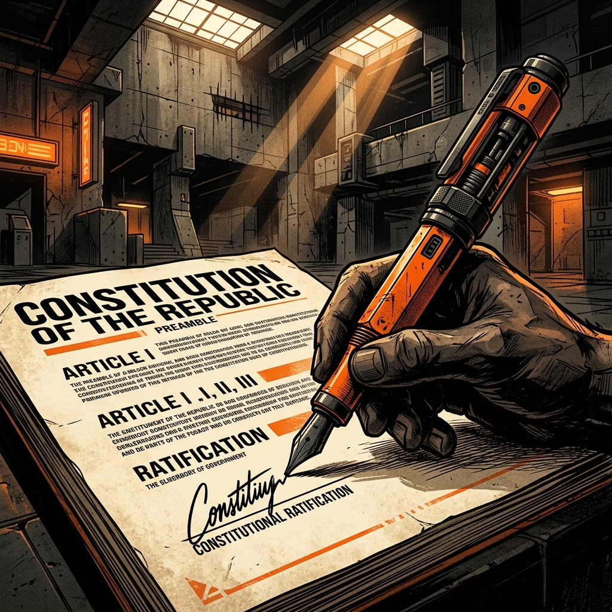

The Monarch's representative in Australia.

The Governor-General is appointed by the Monarch on the advice of the Australian Prime Minister. Their job is to represent the Monarch in Australia and perform important constitutional duties.
Like the Monarch, the Governor-General is meant to be neutral and above politics. They do not write laws or run government departments.
1: Appoint the PM
2: Royal Assent
3: Dissolve Parliament
The Governor-General has several critical jobs to ensure our democracy runs smoothly: